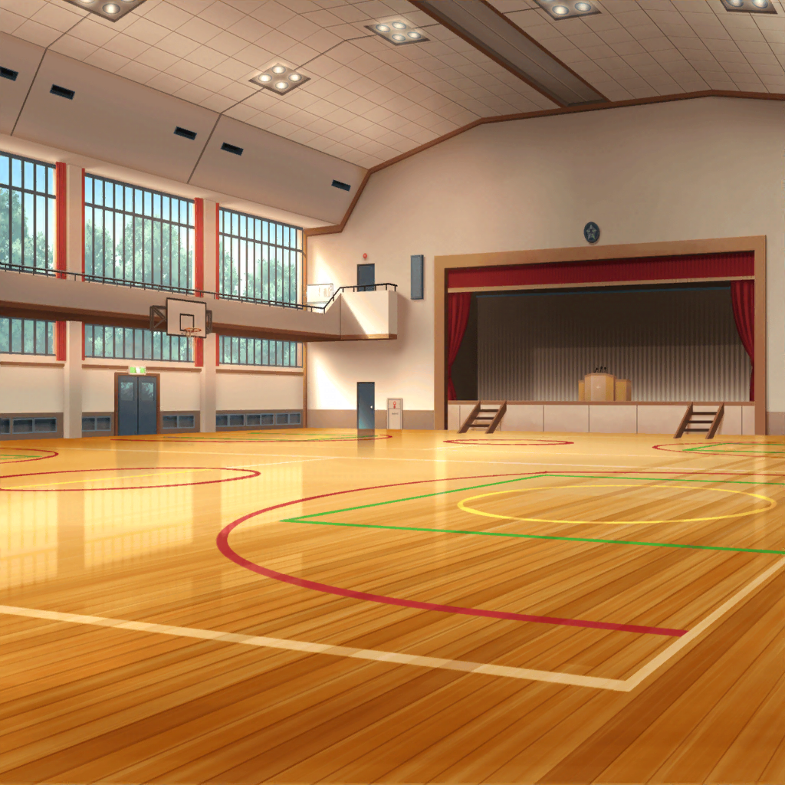

本番当日
羽丘女子学園 体育館
薫
いよいよ本番だね、子猫ちゃん達！
今日の舞台はきっとかけがえのない素晴らしいものになる……
私の心はそんな予感で満ち溢れているよ……！
美咲
気合い入ってるね、薫さん
巴
でも、わかります。
アタシもうまくいく気しかしないですよ
はぐみ
あ、いたいた！
みんな、おつかれさまー！
差し入れのコロッケ持って来たよー
薫
ああ、ありがとう、はぐみ。
うん、揚げたてのいい香りだ。儚い……
はぐみ
コロッケは揚げたてが一番だからね！
はぐみ、超特急でおうちから走ってきたよっ！
はぐみ
……あ、舞台のセットもうできてる！
準備は完璧みたいだね！
薫
もちろん、当然さ……
ん？ 当然……いや、何かを忘れているような……
薫
ハッ！ ミッシェル！！
美咲
うぐっ！？
ちょっ、か、薫さん……
コロッケ食べてる時に急に大声出さないで
薫
た、大変だ！ 美咲！
ミッシェルが来てない！
薫
い、いや、よく考えたら一度も練習に来てない……
DJはずっと美咲に代役をしてもらっていたし……
美咲
（いちいちミッシェルになるのが面倒だから、
ずっと着ぐるみ着ないで練習してたんだった……）
美咲
あのさ、だから、ミッシェルはあたし……
……って、説明してもどうせわかんないんだろうな
美咲
そんなに心配しなくても平気だよ、薫さん。
リハーサルまでにはちゃんとミッシェル来るから
薫
ああ、私はなぜこんな大事なことに今頃気づいたんだ！
み、ミッシェル、今どこにいるんだ……！
美咲
い、いや、だから……
荷物置き場にはいないって……あ！
薫
ミッシェル！
ミッシェル
…………
美咲
（しまった。着ぐるみ、シートを被せて隠しておいたんだった）
薫
ああ、良かった……
来ていたのなら、声をかけてくれ
ミッシェル
…………
薫
み、ミッシェル……？
今日は元気がないみたいじゃないか？
どこか、具合でも悪いのかい？
ミッシェル
…………
薫
ミッシェルがぐったりしてる！
はぐみ
ええっ！ ミッシェル、しっかりして〜！
美咲
わー、ちょっとちょっと！！
２人ともミッシェルに触っちゃダメだって！
はぐみ
な、なんで！？
ミッシェルが心配だよ〜！
美咲
なんでって、それは……
美咲
（胴体に乗せてる頭が落っこちちゃうから……
それで落ちたら、大騒ぎするのは目に見えてるし）
薫
み、美咲、救急車を……！
クマのお医者さんを呼んでくれ……！
美咲
いや、だから医者はいらないってば。
ミッシェルは、その……本番前だから集中してるの
薫
集中？
はぐみ
あ、はぐみ、知ってる！
スポーツの試合前とかにするやつだよね！
美咲
そうそう、それ。
シートを被って精神統一してるんだから、
そっとしておいてあげよう、うん
薫
そ、そうだったのか……
い、いや、いろいろ確認したいことはあるんだが、
そういうなら、リハーサルまでそっとしておこう
美咲
（なんとかなった……）
巴
えっと、ミッシェルの中身って美咲……だよな？
もしかして、あの２人そのことを知らないのか？
美咲
知らないというか、理解してくれないというか……
はぐみ
あれ？ ねぇねぇ、みんな？
荷物置き場にあるこの箱って何？
薫
ああ、バラの花とメッセージカードだよ。
招待した子猫ちゃんのために用意したんだ
美咲
へえ、なんか薫さんっぽいプレゼントだね
薫
ミュージカルは最高の思い出をプレゼントできるけれど、
形に残るものがないのも寂しいだろうと思ったんだ
薫
……ん？
そういえば、ひまりちゃんの姿が見えないね？
巴
ああ、なんか落ち着かないらしくて。
ちょっと散歩してくるって言ってました
薫
フフ、本番前に緊張とはかわいらしい子猫ちゃんだね
 屋上
屋上
ひまり
うう、緊張する〜！
どうしよう、もうすぐ本番だよ〜！！
薫
ああ、ここにいたのか、ひまりちゃん
ひまり
えっ、薫先輩？
もしかして、私を探してたんですか？
薫
本番前で緊張していると聞いたからね。
今日の主役としては放ってはおけないさ
ひまり
うう、すみません。
本番で失敗しちゃったらって考えたら、
どんどん緊張してきちゃって……
薫
そんなに心配する必要はないさ。
これまでしてきた練習を思い出してごらん
薫
かのゲーテもこう言っている。
『自分自身を信じてみるだけでいい。
きっと生きる道が見えてくる』とね。つまり……そういうことさ
ひまり
そ、そうですね！
あんなに練習頑張ったんだもん！
絶対にうまくいきますよね！
薫
ああ、もちろん。
それに、私がついてる。
舞台上でのエスコートは任せてくれ
ひまり
は、はい！
薫
おっと、そろそろリハーサルの時間だ。
さあ、お姫様。楽しい舞台に参りましょう